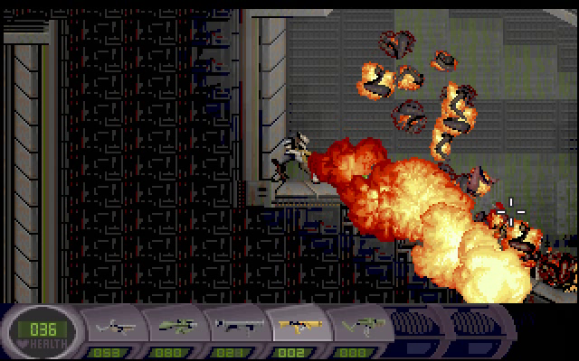

Abuse
This article describes about Abuse version 0.8.
Description
Abuse is an SF action game. You must run and jump to the goal with shotting monsters.
How to Play
You use both of a keyboard and a mouse. You can move by cursor keys, and you can aim and shot monsters by a mouse.
Ctrl key (or a mouse wheel) can change your weapon.
Screencasts
Opening & Title
Tutorial
Gameplay
Problem in Installing
At first, I got a message that told /etc/timidity.conf not
found on starting abuse, and I did not have BGM. When I
installed audio/timidity, abuse got
not to output this message, and I got to have BGM.